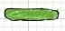
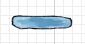
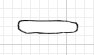
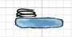
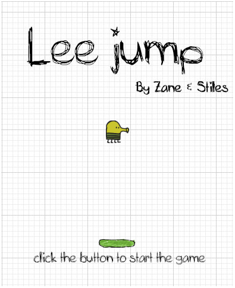
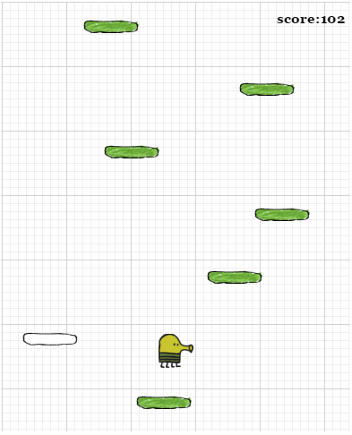
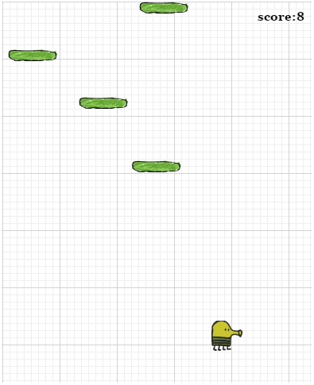
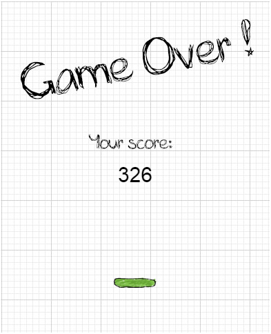
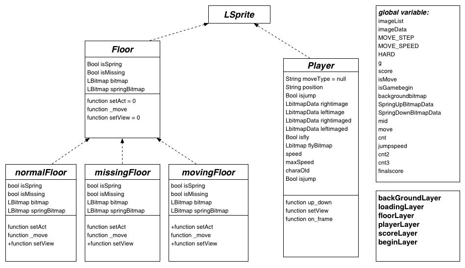

小组成员:
李泽帆 14353157 13168685370 游戏程序主攻、美工
李成婉宁 14353134 15919173325 游戏程序助攻、网页策划
黄芷晴 14353110 13533068256 跑腿
1. 游戏主题
游戏主题是Lee Jump, 是基于手机游戏Doodle Jump的游戏。
2. 小组成员及具体分工情况
李泽帆负责通过程序将游戏实现、美工以及资源提供
李成婉宁负责游戏程序的助攻, 策划html版的设计
黄芷晴负责跑腿
3. 游戏内容描述
1) 游戏类型 : 休闲游戏
2) 玩法介绍 : 游戏利用电脑键盘的左右键控制游戏的主角——doodle, 让其稳稳弹到平台上, 再借助自身弹簧继续弹跳。弹跳的高度越高, 分数也越高。如果doodle没弹到平台上，则会掉下去，游戏结束。 平台一共有三种，绿色的是固定的平台，蓝色的是会移动的平台，而白色的是踩上去一次就会消失的平台，固定平台和蓝色平台上有可能会出现弹簧，doodle落到弹簧上会使它跳得更高。




3) 流程图 :
a) 这是游戏的初始界面，点击绿色的小平台开始游戏。

b) 这是玩游戏的界面，运用电脑键盘的左右键控制doodle的跳跃方向，使它稳稳地落在平台上。

c) 当doodle不能落在平台上，它会掉下去，如下图。

d) doodle掉下平台后则游戏结束，如图。

4) UML图 :
在设计游戏前，我们面向对象设计了下面的UML图，其中包括5个类。
